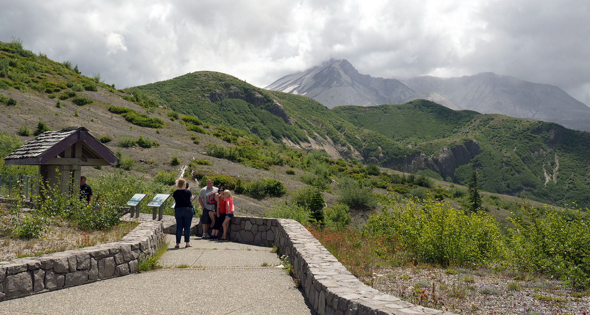
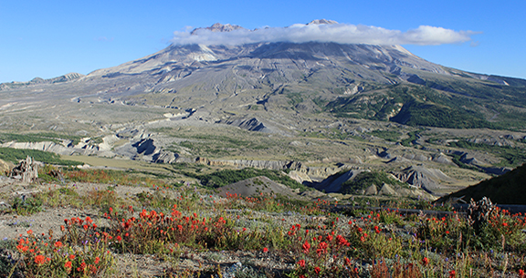

Mount St Helens area
Mount St. Helens West.
From I-5 drive into the heart of the blast zone. Spectaculare crater views, visitor centers, picnic areas and hikes await.
St. Helens East.
This summer and fall route offers views of the crater and Spirit Lake, interpretive sites, and easy or rugged hiking
Mount St. Helens South.
Lavaflows, waterfalls, caves, and lush forest abound. Plenty of year-round recreation options.
Mount Margaret Backcountry.
Rugged, steep trails and amazing landscapes typify the Mt. Margaret Backcountry. Permits required for overnight camping.
 